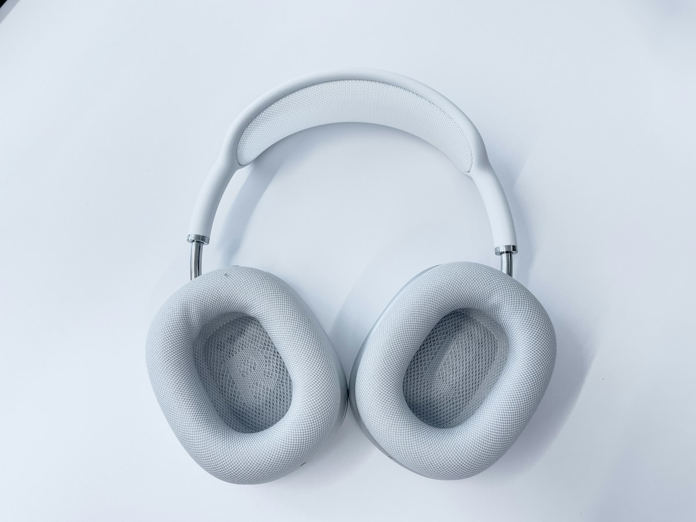
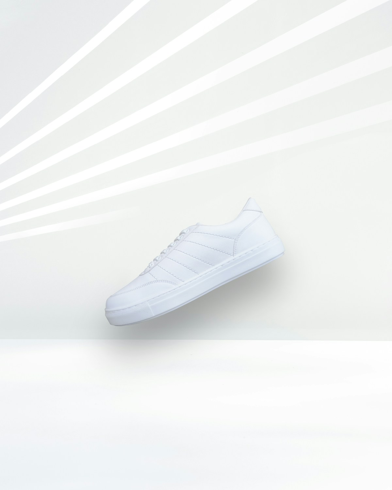
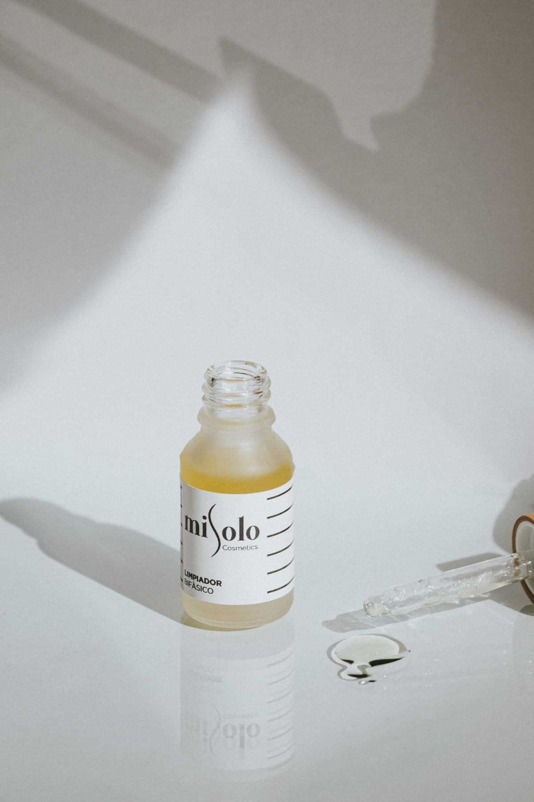

SATUCARD / АУДИОВ ритме дня
Звук.
Без лишнего.

Беспроводные
наушники24 990 ₸
наушники24 990 ₸
Студия
Спокойный тон. Сильный акцент на товаре.
МАЛЕНЬКАЯ ГАЛЕРЕЯ БОЛЬШИХ ИДЕЙ
Техника, одежда или забота о себе.
Найдите подходящую подачу и сделайте её своей.

Спокойный тон. Сильный акцент на товаре.

Тёплый цвет для яркого первого впечатления.

Чистая композиция. Ничего лишнего.
Демонстрационные товары и цены. Фотографии используются для примера оформления.
ЗАМЕТНАЯ ИДЕЯ ДЛЯ ЛОКАЛЬНОГО БИЗНЕСА
SatuCard — учебный проект о том, как сделать повседневную задачу продавца проще. Превратить фото в аккуратную карточку можно без опыта в дизайне и сложных программ.
Разработано для Казахстана · ₸Для единой визуальной подачи товаров в ленте и каталоге небольшого магазина.
Чтобы быстро попробовать оформление нового товара перед публикацией.
Чтобы увидеть свою идею в красивой форме — без регистрации и платных инструментов.
ОТ ФОТО ДО КАРТОЧКИ
Выберите снимок товара на компьютере или телефоне. Можно начать с готового примера.
Укажите название и цену в тенге. Выберите один из трёх вариантов оформления.
Проверьте карточку в живом просмотре и скачайте PNG на своё устройство.
Сейчас SatuCard — работающий браузерный прототип. Он размещает исходное фото, текст и цену в выбранном шаблоне. ИИ не используется, фон не удаляется. Нет сервера, аккаунтов и Telegram-бота. Автопубликация на маркетплейсах не предусмотрена.
ТЕПЕРЬ ВАША ОЧЕРЕДЬ